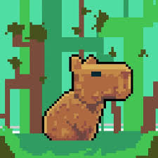

Technologo em ADS
IFSC campus Gaspar
2025 - 2028

E-mail: felipe.w28@aluno.ifsc.edu.br
Telefone: (47) 99999-9999
LinkedIn: linkedin.com/in/felipewanderherz
Sou estudante de ADS no IFSC campus Gaspar. Tenho facilidade para aprender novas tecnologias e gosto de trabalhar em equipe. "Só sabo que nada sebo" -Ai, Alguem
IFSC campus Gaspar
2025 - 2028
Participei de um projeto em equipe para o desenvolvimento de um sistema para Facções de costura.
| Horário | Segunda | Terça | Quarta | Quinta | Sexta |
|---|---|---|---|---|---|
| 08:00 - 09:40 | Algoritmos | Banco de Dados | HTML | Redes | Matemática |
| 10:00 - 11:40 | POO | Engenharia de Software | PHP | Banco de Dados | Projeto Integrador |